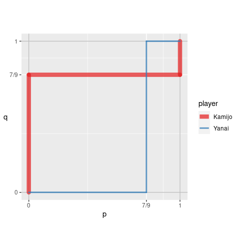

Overview
The goal of rgamer is to help students learn Game Theory using R. The functions prepared by the package not only solve basic games such as two-person normal-form games but also provides the users with visual displays that highlight some aspects of the games — payoff matrix, best response correspondence, etc. In addition, it suggests some numerical solutions for games of which it is difficult — or even seems impossible — to derive a closed-form analytical solution.
Installation
You can install the development version from GitHub with:
# install.packages("remotes")
remotes::install_github("yukiyanai/rgamer")or
# install.packages("devtools")
devtools::install_github("yukiyanai/rgamer")Examples
Example 1
An example of a normal-form game (prisoner’s dilemma).
- Player: {Kamijo, Yanai }
- Strategy: {(Stays silent, Betrays), (Stays silent, Betrays)}
- Payoff: {(-1, 0, -3, -2), (-1, -3, 0, -2)}
First, you define the game by normal_form():
game1 <- normal_form(
players = c("Kamijo", "Yanai"),
s1 = c("Stays silent", "Betrays"),
s2 = c("Stays silent", "Betrays"),
p1 = c(-1, 0, -3, -2),
p2 = c(-1, -3, 0, -2))Then, you can pass it to solve_nfg() function to get the table of the game and the Nash equilibrium.
s_game1 <- solve_nfg(game1)#> Pure-strategy NE: (Betrays, Betrays)
Example 2
An example of a coordination game.
- Player: {Kamijo, Yanai }
- Strategy: {(Stag, Hare), (Stag, Hare)}
- Payoff: {(10, 8, 0, 7), (10, 0, 8, 7)}
Define the game by normal_form():
game2 <- normal_form(
players = c("Kamijo", "Yanai"),
s1 = c("Stag", "Hare"),
s2 = c("Stag", "Hare"),
p1 = c(10, 8, 0, 7),
p2 = c(10, 0, 8, 7))Then, you can pass it to solve_nfg() function to get NEs. Set mixed = TRUE to find mixed-strategy NEs well.
s_game2 <- solve_nfg(game2, mixed = TRUE, show_table = FALSE)
#> Pure-strategy NE: (Stag, Stag)(Hare, Hare)
#> Mixed-strategy NE: [(7/9, 2/9), (7/9, 2/9)]
#> # The obtained mixed-strategy NE might be only a part of the solutions.
#> # Please examine br_plot (best response plot) carefully.For a 2-by-2 game, you can plot the best response correspondences as well.
s_game2$br_plot
Example 3
An example of a normal-form game:
- Player: { A, B }
- Strategy: {x ∈ 0, 30, y ∈ 0, 30 }
- Payoff: {fx(x, y) = − x2 + (28 − y)x, fy(x, y) = − y2 + (28 − x)y}
You can define a game by specifying payoff functions as character vectors using normal_form():
game3 <- normal_form(
players = c("A", "B"),
p1 = "-x^2 + (28 - y) * x",
p2 = "-y^2 + (28 - x) * y",
par1_lim = c(0, 30),
par2_lim = c(0, 30),
pars = c("x", "y"))Then, you can pass it to solve_nfg(), which displays the best response correspondences by default.
s_game3 <- solve_nfg(game3)
#> NE: (28/3, 28/3)
#> # The obtained NE might be only a part of the solutions.
#> # Please examine br_plot (best response plot) carefully.
Example 4
An example of a normal-form game:
- Player: { A, B }
- Strategy: {x ∈ 0, 30, y ∈ 0, 30 }
- Payoff: {fx(x, y) = − xa + (b − y)x, fy(x, y) = − ys + (t − x)y}
You can define a normal-form game by specifying payoffs by R functions.
f_x <- function(x, y, a, b) {
-x^a + (b - y) * x
}
f_y <- function(x, y, s, t) {
-y^s + (t - x) * y
}
game4 <- normal_form(
players = c("A", "B"),
p1 = f_x,
p2 = f_y,
par1_lim = c(0, 30),
par2_lim = c(0, 30),
pars = c("x", "y"))Then, you can approximate a solution numerically by solve_nfg(). Note that you need to set the parameter values of the function that should be treated as constants by arguments cons1 and cons2, each of which accepts a named list. In addition, you can suppress the plot of best responses by plot = FALSE.
s_game4 <- solve_nfg(
game = game4,
cons1 = list(a = 2, b = 28),
cons2 = list(s = 2, t = 28),
plot = FALSE
)
#> approximated NE: (9.3, 9.3)
#> # The obtained NE might be only a part of the solutions.
#> # Please examine br_plot (best response plot) carefully.You can increase the precision of approximation by precision, which takes a natural number (default is precision = 1).
s_game4b <- solve_nfg(
game = game4,
cons1 = list(a = 2, b = 28),
cons2 = list(s = 2, t = 28),
precision = 3
)
#> approximated NE: (9.333, 9.333)
#> # The obtained NE might be only a part of the solutions.
#> # Please examine br_plot (best response plot) carefully.
You can extract the best response plot with NE marked as follows.
s_game4b$br_plot_NE
Example 5
You can define payoffs by R functions and evaluate them at some discretized values by setting discretize = TRUE. The following is a Bertrand competition example:
func_price1 <- function(p, q) {
if (p < q) {
profit <- p
} else if (p == q) {
profit <- 0.5 * p
} else {
profit <- 0
}
profit
}
func_price2 <- function(p, q){
if (p > q) {
profit <- q
} else if (p == q) {
profit <- 0.5 * q
} else {
profit <- 0
}
profit
}
game5 <- normal_form(
p1 = func_price1,
p2 = func_price2,
pars = c("p", "q"),
par1_lim = c(0, 10),
par2_lim = c(0, 10),
discretize = TRUE)Then, you can examine the specified part of the game.
s_game5 <- solve_nfg(game5, mark_br = FALSE)#> Pure-strategy NE: (0, 0)(2, 2)(4, 4)
Example 6
You can draw a tree of an extensive form game.
game6 <- extensive_form(
players = list("Yanai",
rep("Kamijo", 2),
rep(NA, 4)),
actions = list(c("stat", "game"),
c("stat", "game"), c("stat", "game")),
payoffs = list(Yanai = c(2, 0, 0, 1),
Kamijo = c(1, 0, 0, 2)),
quietly = TRUE
)
And you can show the equilibrium path by setting mark_path = TRUE.
game6 <- extensive_form(
players = list("Yanai",
rep("Kamijo", 2),
rep(NA, 4)),
actions = list(c("stat", "game"),
c("stat", "game"), c("stat", "game")),
payoffs = list(Yanai = c(2, 0, 0, 1),
Kamijo = c(1, 0, 0, 2)),
mark_path = TRUE,
direction = "right",
color_palette = "Accent"
)